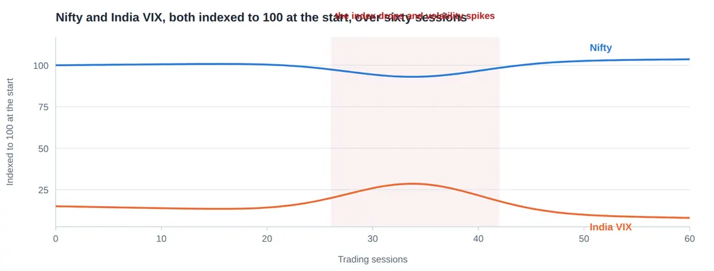
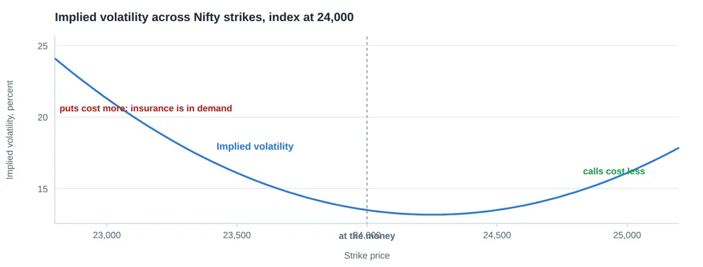

Library / MiyeeStockBuddy: The Complete Guide to Indian Markets
Part 12. Volatility and India VIX
Volatility is how much something moves, not which way. It is the one ingredient in an option price that cannot be looked up as a fact, which is why it is where most of the disagreement and most of the opportunity in options lives.
12.1 Two Kinds of Volatility, and They Are Not the Same Thing
Kind | What it is | Where it comes from |
|---|---|---|
Historical volatility | How much the price actually moved over some past period | Calculated from price history. A fact. |
Implied volatility | How much the market expects it to move from here | Worked backwards out of the option prices people are paying. An opinion. |
Implied volatility is the interesting one. It is not forecast by anybody: it is extracted. You take the option price the market is actually paying, put it into the pricing formula, and solve for the volatility figure that would justify that price. The answer is the market’s collective expectation, expressed as a number.
Think of it like this Historical volatility is looking at last year’s rainfall records. Implied volatility is looking at what people are paying for umbrellas today. When umbrellas cost three times normal, you learn something the rainfall records cannot tell you: that a lot of people are expecting rain. They may be wrong. But you now know what you are paying for, and that buying an umbrella today is expensive. |
The rule to remember Compare the two. When implied volatility is far above historical, options are expensive relative to how the stock has actually been behaving, and selling is favoured. When it is below, options are cheap and buying is favoured. This single comparison is worth more than most indicator systems. |
12.2 India VIX
India VIX is a single number computed from Nifty option prices that expresses the expected annualised volatility of the Nifty over the coming thirty days. A reading of 14 means the option market expects Nifty to move about 14 percent, up or down, over the next year, expressed at an annual rate.

Illustrative shapes, not actual quoted levels
Figure 38. India VIX measures how much movement the option market is pricing in for the next month. It climbs when the index falls and people rush to buy protection, and it drifts down through quiet rising markets. Buying options when VIX has already spiked means paying for fear at its most expensive.
Turning VIX into a number you can use India VIX is 14. To get the expected move over one month, divide by the square root of 12, since there are twelve months in a year. 14 divided by 3.46 = roughly 4 percent expected move over the next month On a Nifty of 24,000 that is about 960 points, either way. For a single day, divide the annual figure by the square root of about 250 trading days: 14 divided by 15.8 = roughly 0.9 percent, or about 215 Nifty points on an average day. This is genuinely useful. If you are buying an option that needs a 600 point move in three days, this arithmetic tells you that you are betting on something roughly three times a normal day, three days running. | |||
India VIX | What the market is saying | What it usually means for you | |
Below 12 | Calm. Very little expected movement. | Options are cheap. Sellers earn little. Complacency risk. | |
12 to 18 | Normal Indian market conditions | The usual environment for most strategies | |
18 to 25 | Nervous. Something is worrying people. | Premiums are rich. Buying gets expensive. | |
Above 25 | Fear. Crisis, election result, global shock. | Premiums are very rich, and margins have risen with them | |
VIX and Nifty are strongly negatively correlated. The index falls and VIX spikes, because falls are fast and people rush to buy protection. Rises are slow and boring, so VIX drifts down through them. A VIX spike is therefore usually a coincident indicator of a fall rather than a warning of one, which limits its use as a timing tool but makes it excellent for judging whether options are cheap or dear right now.
12.3 The Volatility Smile and the Skew
If the pricing model were literally true, every strike on the same expiry would imply the same volatility. They do not. Plot implied volatility against strike and you get a curve, and in Indian index options that curve is tilted.

Figure 39. Traded option prices do not imply one flat volatility. Downside strikes carry a higher implied volatility than upside ones, because far more people buy puts for protection than buy calls for fun. This tilt is the reason cheap looking far out of the money calls are cheap.
Downside strikes carry higher implied volatility than upside ones. The reason is not mathematical, it is human: far more people buy puts as insurance than buy calls for fun, and institutions hold shares and hedge them downwards. That persistent demand raises the price of downside protection.
What the skew tells you in practice Out of the money puts are structurally expensive in Indian index options. Buying them as a regular habit is paying a permanent premium for insurance. Out of the money calls are relatively cheaper. This is one reason a covered call, which sells the call, earns less in index products than beginners expect. When the skew steepens sharply, meaning downside puts get suddenly much dearer relative to calls, someone with size is buying protection. That is worth noticing. |
12.4 Volatility Crush, Named Properly
Part 11 met this through vega. It deserves its own name because it is the single most common way a correct view produces a loss.
Before any scheduled event, implied volatility rises, because the outcome is unknown and everyone wants either protection or a lottery ticket. The moment the event happens, the uncertainty is resolved, and implied volatility collapses regardless of what the outcome was.
Event | Before | After | |
|---|---|---|---|
Company quarterly results | IV in that stock rises sharply for days | IV collapses within minutes of the announcement | |
Union Budget | Nifty IV and India VIX climb through late January | Both fall on budget afternoon whatever was announced | |
Election counting day | VIX can double | Falls back within a day or two | |
RBI policy | Mild rise in the days before | Mild fall after | |
The rule to remember If you want to trade an event with options, buy the volatility well before everyone else does, or use a spread so that you are selling one inflated option to pay for another. Buying a plain option on the morning of the event means paying the highest volatility of the cycle, and needing an unusually large move just to break even. | |||
© Vipin Nair. This guide is for reading online only. Copying, downloading, printing and redistribution are not permitted. For study and general reference; not legal, tax or investment advice.